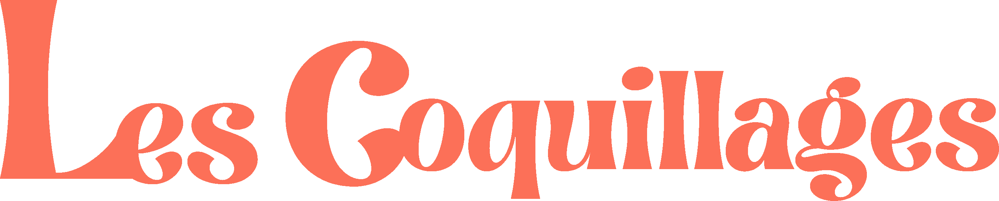
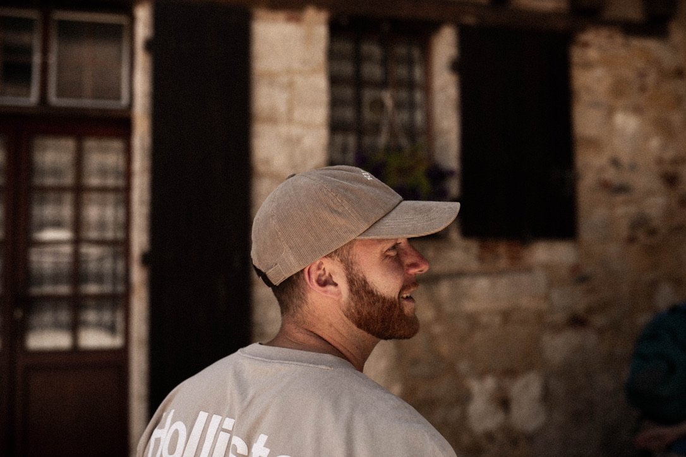

Alex à la vidéo
Films cinématiques et vivants. Capter la vie de
votre mariage, à travers vos discours, vos rires, et votre amour.
Je suis Alex, vidéaste de mariage basé à Orléans. Je réalise des films de mariage authentiques, vivants et cinématographiques.
Chaque rire qui échappe avant qu'on ait pu le retenir, chaque silence qui en dit plus qu'un discours, chaque main qui se pose sans y penser, chaque rayon de lumière qui traverse la pièce au bon moment : ce sont ces détails minuscules et involontaires qui tissent la vraie histoire de votre journée. Mon travail, c'est de les repérer avant qu'ils ne disparaissent, et de les assembler pour qu'ils redeviennent, des années plus tard, aussi vivants qu'au premier jour.
La vie, je la vis comme une improvisation permanente : on avance sans savoir exactement ce qui va se passer, et c'est précisément là que tout devient intéressant. Ce n'est pas de l'insouciance, c'est une conviction : ce qu'on ne peut pas planifier est souvent ce qui compte le plus.
Je suis sensible à tout ce qui nous entoure. Un ciel qui s'embrase au coucher du soleil, une mer qui n'a jamais deux fois le même visage, une nature qui était là bien avant nous et qui restera bien après. Rien de tout ça ne s'impose bruyamment. Il faut juste être assez attentif pour le voir. C'est cette attention-là que j'essaie de mettre dans chaque film.
C'est cette philosophie que j'apporte derrière la caméra. Je ne cherche pas l'instant parfait. Je cherche ce qui flotte autour de cette instant : la lumière qui change tout sans qu'on la remarque, le son qui donne au silence tout son poids, une tension avant qu'un mot ne soit dit, une énergie qu'on ne sait pas nommer mais qu'on reconnaît tout de suite en la revoyant. Ce n'est pas un moment que je filme. C'est une présence, faite de lumière, de son, et de tout ce qui ne se voit pas.
Ce que je veux faire de ma vie, c'est la remplir de vrai : des voyages, des rencontres, des gens choisis plutôt que subis, et suffisamment de présence pour ne rien laisser filer de ce qui compte.
Et ce que je veux vous donner, à vous qui me confiez votre mariage, c'est cette même conviction traduite en images : que rien de ce qui vous arrivera ce jour-là n'a besoin d'être forcé pour être beau. Il suffit d'être là, prêt, pour que la vie fasse le reste.
Nos films sont réunis sur une page à part, pour les regarder tranquillement, le son allumé.
Voir nos films →« Il n'y a pas de plus belle histoire que celle de deux êtres qui se choisissent »
AlexLa vidéo donne le mouvement et le son, la photo en fixe l'instant. Découvrez l'autre moitié de notre duo.